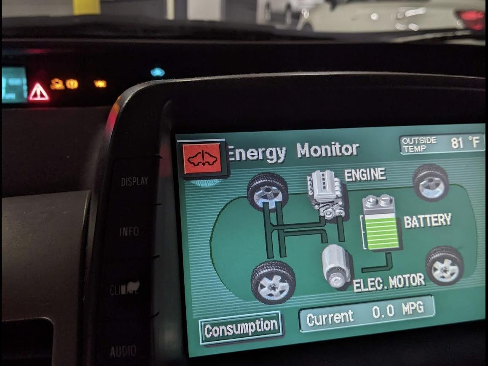
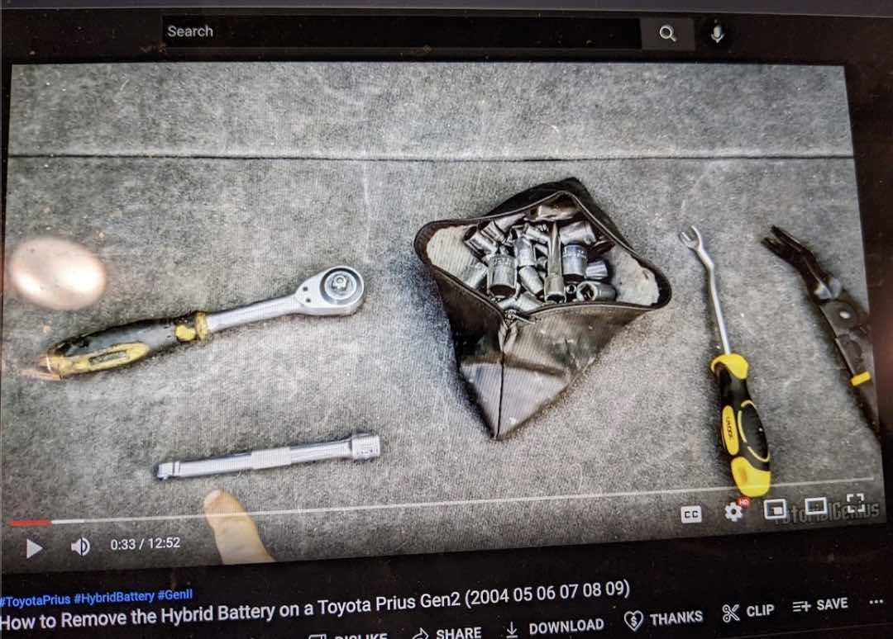
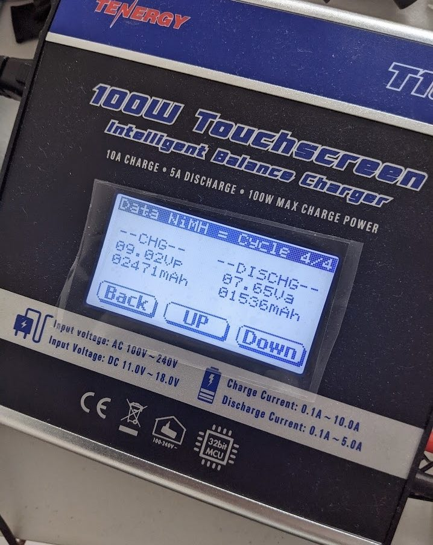
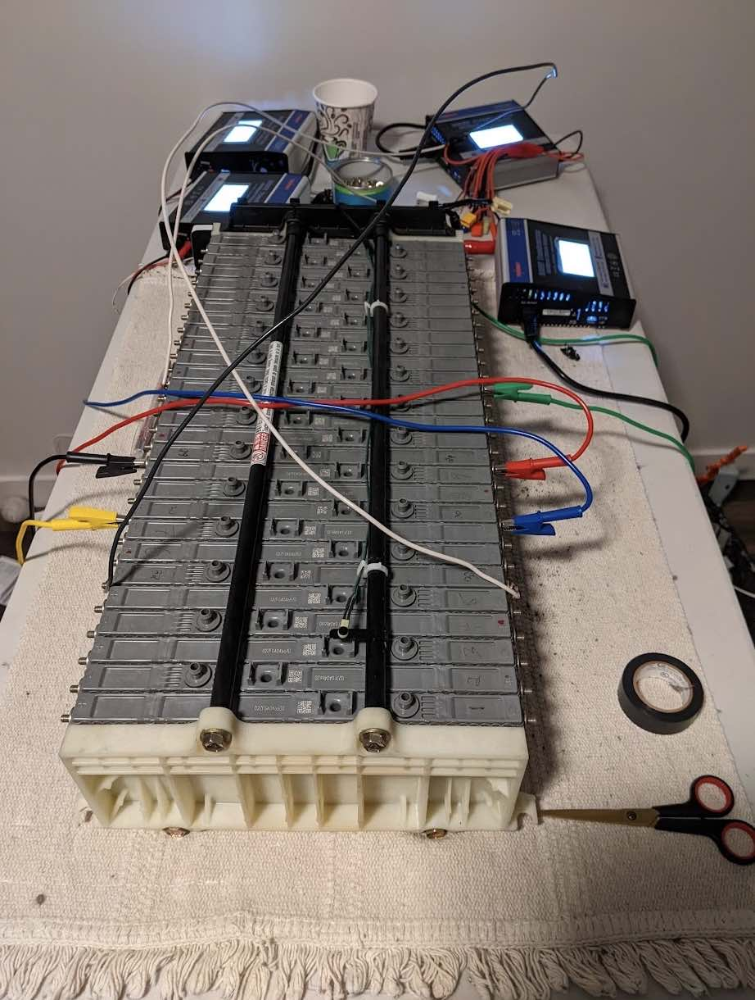
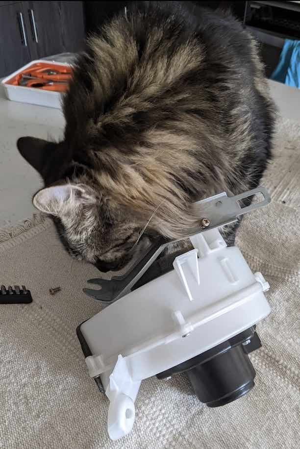
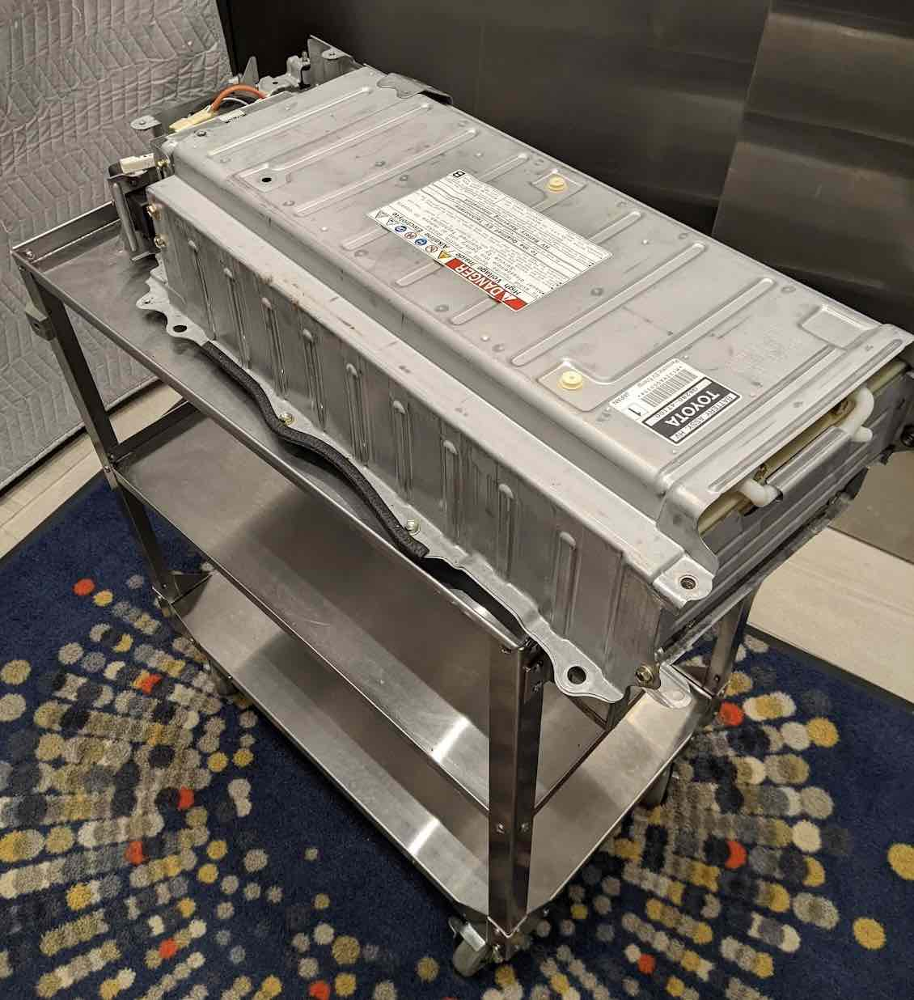
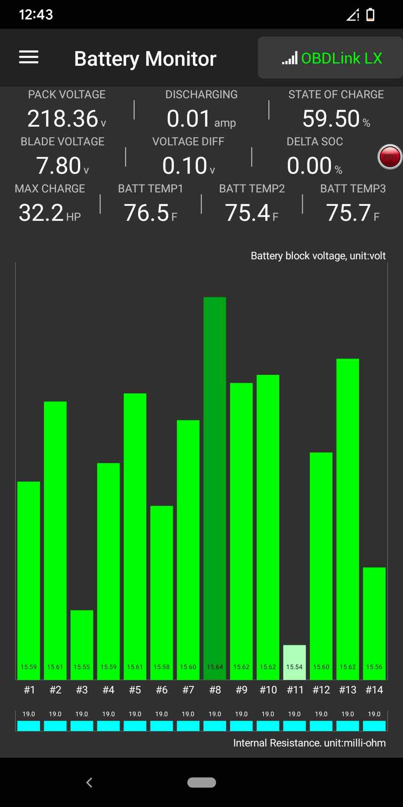

In August of 2022 I got the red triangle of death on my 2005 Prius.
When the dreaded red triangle of death appears on the dash, it means something is seriously wrong. It often signals a major issue with the hybrid battery, which can be both costly and time-consuming to repair.

A Prius battery issue isn’t as big of a problem on the West Coast, where these cars and repair services are plentiful. At the time I was living in Delaware, and local resources were scarce.
Cost and Risk Assessment
After calling around I was quoted:
- $2,150 from a dedicated hybrid shop that would need the car for one week. However, it was hour drive and it was very possible I wouldn’t make it, incurring tow truck costs.
- $2,750 from a mechanic nearby with no warrenty.
- 3,500 from the Toyota dealer down the street with a dubious warrenty.

Using napkin math I calculated the value of doing the work myself. If it took 70 hours of my time, using 43.27 per hour. This would go down for any costs incurred and go up for any time saved.
After a little research I learned that it was probably a few cells on the battery, not the whole shebang. Cells were 200 in equipment cost.

An estimated total cost of 720 still put me at a work/save rate of 67k per year.
While the tutorials were good and I had several engineer friends I could ask for help if things went south, I did have to accept the risk that it wouldn’t work at all. This would probably land me with the either the local mechanic or the Toyota dealer.
But in that case, I also had to accept the lack of warrenty from the local mechanics. The local mechanics didn’t have any experience with the Prius batteries. They would just have to figure it out. I couldn’t guarantee the quality of their work, but I was confident in my own abilities.
Weighed these risks against the rewards, risking $720 to potentially save several thousand while picking up some interesting skills seemed worth it.

In the end, it cost me 77.85 /hr or $161k per year. A pretty good deal!
Major Conveniences
Some majorly helpful things:
- I had no immediate need for a car. I could easily and pleasantly bus/bike/walk/train to work, groceries, and entertainment.
- I was mostly work from home so I could watch over the battery during conditioning for safety reasons during the day.
- Stephanie was out of town for 3 months.
Having Stephanie out of town was a huge help because no one else needed to use the car. And no one complained about the toxic gasses being emitted during the reconditioning process that forced me to leave the bedroom windows open through the night because it was a 1 bedroom apartment and the bedroom was the only place I could keep it where the cats wouldn’t climb on it and get electrocuted. Heh.

Process
Here’s the project outline.
- confirm battery issue
- research
- buy tools and equipment
- remove the battery
- test and recondition condition the cells
- balance the battery
- re-install the battery
- drive off into the sunset Of course, in the actual process there were 4 or 5 more “buy tools and equipment” and 9 or 10 “research” steps.
To efficient at managing my time, I would run the battery cell conditioning cycles twice a day. Starting in the morning before work and again about twelve hours later.
Challenges
I was living in a prim and proper apartment complex at the time and doing work on your car in the garage was not the kind of behavior or tenant that would have been acceptable.
I couldn’t help but laugh as, in the dead of the night, I pulled the battery and carted it up to my apartment. I was fortunate no one saw me or complained.

The intent of anti car repair language was to prevent derelict looking cars, inconvenience to residents, and prevent safety issues. My plan, if someone complained, was to cite a passage in the lease clarifying that battery replacements were acceptable. Though it’s a big battery, it’s still just a battery!
Some things I’d do differently:
- Buy the more expensive cells from the super wonk who does Prius battery reconditioning full time. Not going to him first meant I lost several weeks waiting after realizing the others I bought were worthless.
- Speed up the conditioning process by buying balance chargers that could handle multiple cells at once.
- At the time I wasn’t worried about it. But now after working in construction and knowing importance of safety equipment, I would buy (rent?) a fire extinguisher for electrical fires. The risk of fire is very low, but a fire extinguisher is not expensive and the danger is potentially catastrophic. It is a risk worth mitigating.
Result
Success! The voltage difference was down to .1 volts (excellent) and I came well within budget and time. Though… a little long on overall project duration.

Bonuses: It was fun. I got an excuse to learn about battery technology, electricity, and cars. It was also great conversation material.
The battery lasted over a year. Hurray! Once the cells start failing, others can will start to fail, so you’re looking at doing this work once every 12 to 18 months.
It failed again in October of 2023 but I was on the West Coast in Portland. I was super pressed for time, driving constantly to random locations, and the cost for an immediate battery replacement at my place was $1000 with a one year warrenty.
It was an easy decision to go with the replacement. Could I do it again? Yes, but I knew exactly what it would take to do the work and I didn’t have the time. I was extremely happy to pay someone else a reasonable price for a very convenient service.